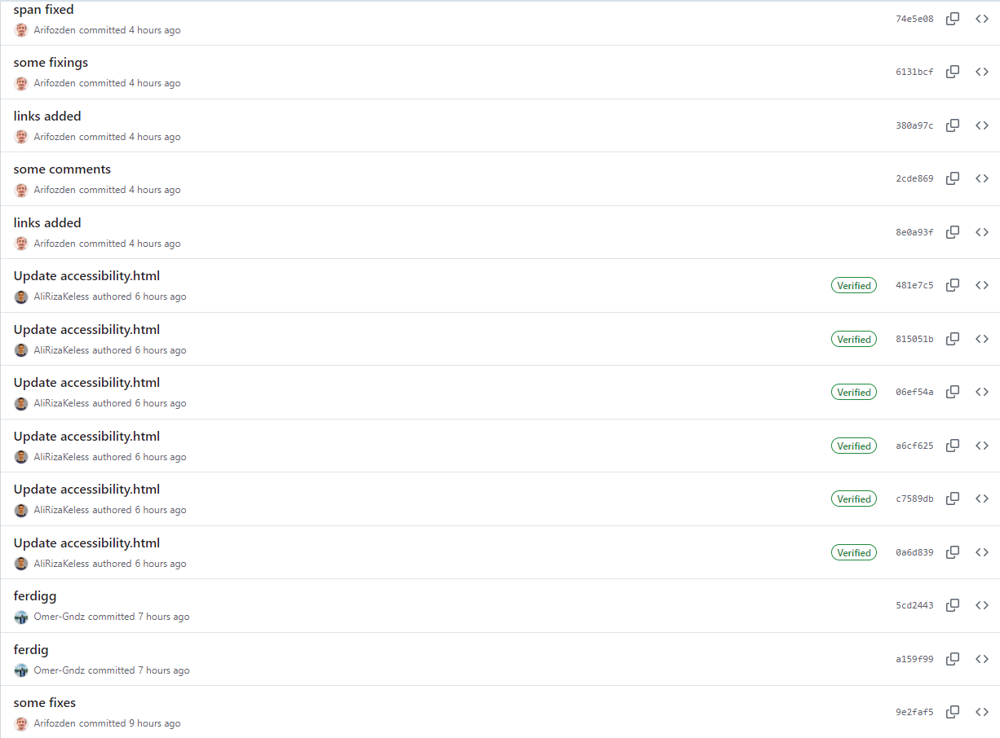

Fordeler og Utfordringer ved å Bruke GitHub
Vi har selv opplevd mange fordeler og noen utfordringer ved å bruke GitHub. Først, la oss nevne fordelene:
- Med GitHub kan vi lagre hver endring vi gjør og enkelt gå tilbake til tidligere versjoner ved behov. Dette er spesielt nyttig i prosjekter hvor vi må reversere eller løse feil. Jeg kan også se hvem som gjorde hvilke endringer og når.
- For det andre gjør GitHub det enkelt å jobbe som et team på samme prosjekt. Ulike personer kan bidra til prosjektet, og kodene kan kombineres og kontrolleres.
- Ved å lagre kodene våre på GitHub, har vi aldri bekymret oss for tap av data.
Men, det finnes også noen utfordringer ved å bruke GitHub:
- Da vi begynte å bruke Git og GitHub, føltes vi det var veldig komplisert.
- Når flere personer jobber med samme fil i et team, kan konflikter oppstå. Å løse disse konfliktene kan være tidkrevende og krever oppmerksomhet, og det krever virkelig erfaring for å forstå.
- Noen ganger kan en feil merge-operasjon eller uplanlagte commits gjørde prosjektet mer komplisert. Derfor prøvde vi å jobbe mer organisert og å skrive forklarende commit-kommentarer.
- For store prosjekter er det veldig viktig å holde grener og commits organisert. Hvis dette ikke blir gjort, kan prosjektstyring bli ganske utfordrende.
Generelt sett tar det litt tid å lære å bruke GitHub riktig, men fordelene det gir, er absolutt verdt det. Selv om det er utfordringer, motiverer de meg til å bli en bedre utvikler.